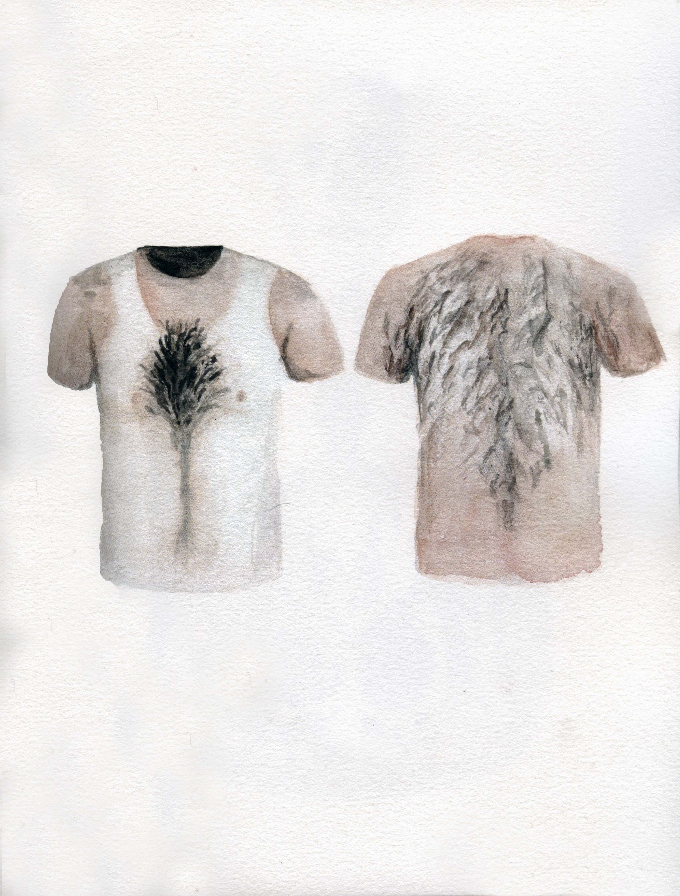

Christina Sarli
Purgative, theatrical...
My works play with figurative fragments in their aesthetic semiotic roles.
Through the repetition of imagery and icons, a unique half analogue-half digital visual lexicon develops and follows my own stream of consciousness.
My artistic practice could be seen as a kind of diary writing: purgative, theatrical and multisensory.
The multidisciplinary means of expression i.e., drawing, digital ink, traditional and computer animation mix visual, text-based, abstract and representational
languages adapted to the needs of the narrative. In this collaborative project with Lisa Holmgren and Chihiro Nodera I am inspired to explore the qualities of
the project space surroundings with drawing fragments and new media assemblages. In resonance with my fellow artists and the audience I aim to expose my artistic
processes to the audience in a contemporary storytelling interactive setting.
Christina Sarli föddes 1988 i Rhodos, Grekland. Under hennes grundutbildning på University of Fine Arts i Thessaloniki studerade hon anatomi, geometri och konstteori. Konstnärliga praktiker som hon introducerades för under hennes fortsatta utbildning inom konst i Berlin försåg henne med verktyg att anpassa influenserna – omforma dem, ifrågasätta dem, brutalisera dem och spela med dess motsatser på hennes egna villkor – kontroll och frihet. Hon lever och arbetar i Berlin.
Christina Sarli´s Website